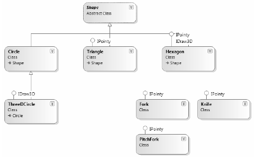

Recall that the same interface can be implemented by numerous types, even if they are not within the same class hierarchy and do not have a common parent class beyond System.Object. This can yield some very powerful programming constructs. For example, assume you have developed three new class types within your current project that model kitchen utensils (via Knife and Fork classes) and another modeling gardening equipment (à la PitchFork). Consider Figure 9-4.
Figure 9-4. Recall that interfaces can be “plugged into” any type in any part of a class hierarchy
If you defined the PitchFork, Fork, and Knife types, you could now define an array of IPointycompatible objects. Given that these members all support the same interface, you can iterate through the array and treat each item as an IPointy-compatible object, regardless of the overall diversity of the class hierarchies:
static void Main(string[] args) { ... // This array can only contain types that // implement the IPointy interface. IPointy[] myPointyObjects = {new Hexagon(), new Knife(), new Triangle(), new Fork(), new PitchFork()}; foreach(IPointy i in myPointyObjects) Console.WriteLine("Object has {0} points.", i.Points); Console.ReadLine(); }
Source Code The CustomInterface project is located under the Chapter 9 subdirectory.